Getting Started
Initialize Cluster
The first step to use chango is to create the initial cluster. Go to Clusters → Create Initial Cluster.
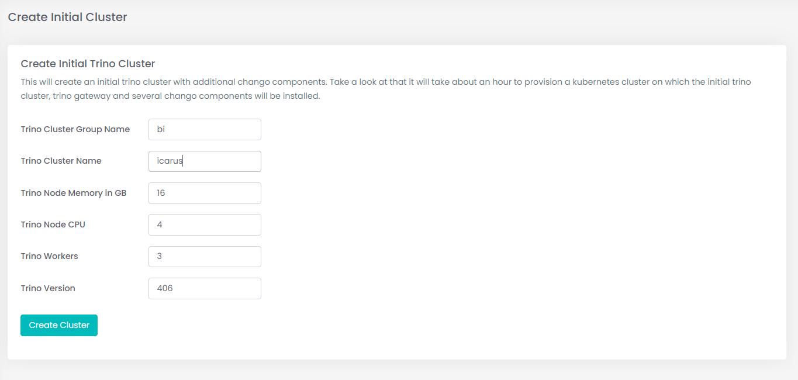
Trino Cluster Group Nameis the name of the logical cluster group which will be created for the specific team or organization.Trino Cluster Nameis the name of the trino cluster which belongs to the cluster group with the name ofTrino Cluster Group Name. The trino cluster with the name ofTrino Cluster Namewill be created.Trino Node Memoryin GB is the reference value to calculate the memory of a kubernetes node on which trino will be installed. Let’s say, ifTrino Node Memoryin GB is 16, then the actual memory of kubernetes node provisioned will be 16/0.8, that is, 20GB. According to this reference value , the memory related trino configurations also will be calculated and set.Trino Node CPUis the cpu count of kubernetes node on which trino will be installed.Trino Workeris the trino worker count.Trino Versionis the version of trino which will be installed. You can reinstall trino cluster with another version everytime you want.
After clicking the button of Create Cluster , the kubernetes cluster will be provisioned on which the initial trino cluster will be installed with additional chango components and trino gateway. It take a little bit time, about an hour.
Administrate Cluster Group
Overview of Cluster Group
After success of initializing cluster, you need to go to Clusters → Cluster Group to administrate all the trino clusters and trino gateway.
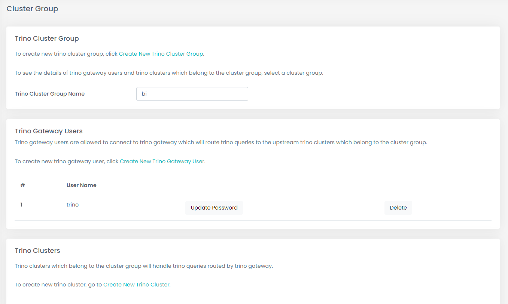
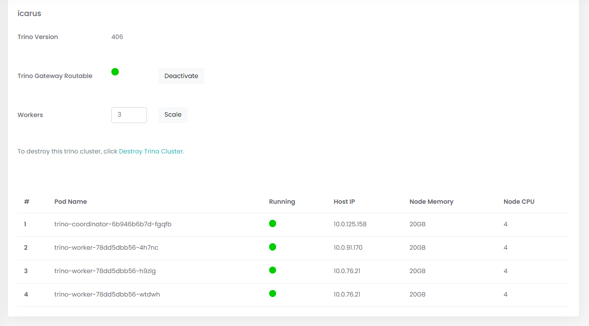
Take a note that a cluster group can have many trino gateway users and many trino clusters.
That is, all the trino gateway users can connect to and send queries to trino gateway which will route the queries to backend trino clusters which belong to this cluster group.
After installing initial cluster, trino gateway user trino has been created automatically which has the password with the default value of trino123 .
You need to chango this default password to another one with clicking the button of Update Password .
In Trino Clusters part, the details of installed trino cluster can be seen.
Trino Gateway Routable with green circle means, trino gateway will route trino queries to this trino cluster.
Worker is the count of trino workers which can be scaled with clicking the button of Scale .
Pods has been listed with Host IP which is the private address of kubernetes node on which trino pod is running.
As mentioned before, Node Memory is the value calculated with respect to reference value ,
that is, Trino Node Memory in GB which is entered when initialization of cluster has submitted.
Scale Trino Workers
To scale out / in trino workers, use the button of Scale with adjusting worker count.
Let’s scale out trino workers from 3 to 5. It looks like this.
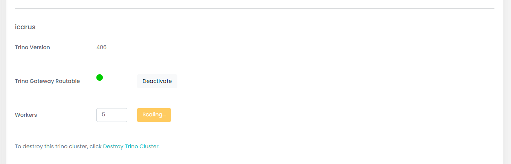
It will provision 2 new kubernetes nodes and then trino workers will be deployed on that new kubernetes nodes. For scaling in workers, first replicas of trino workers will be decreased and then the kubernetes nodes on which trino workers are not running will be removed. After success of scaling out workers, it looks like the following picture.
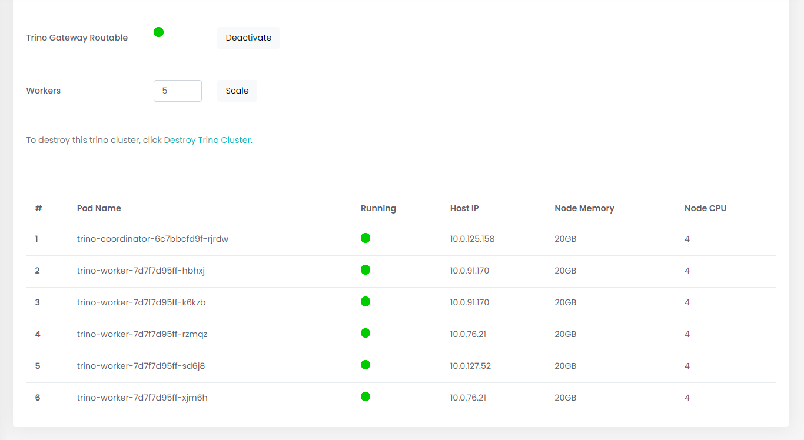
The below picture show the scaling process to scale in workers from 5 to 1.
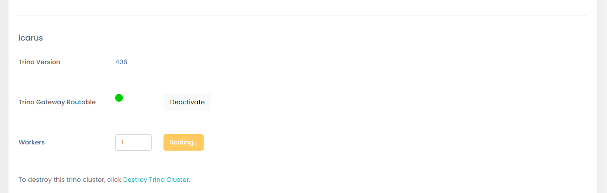
After success of scaling in workers from 5 to 1, it looks like this.
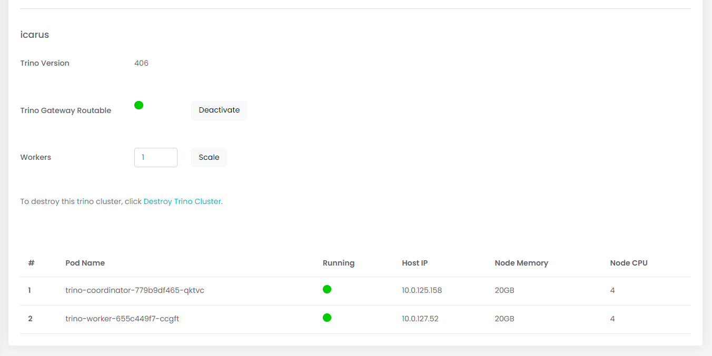
Update Memory Properties
Memory properties in trino cluster have been configured by chango automatically.
But you can configure them to suit your needs. To update memory properties like max memory per node,
max memory and total memory in trino cluster, click the button Update in Memory Properties in GB in trino cluster.
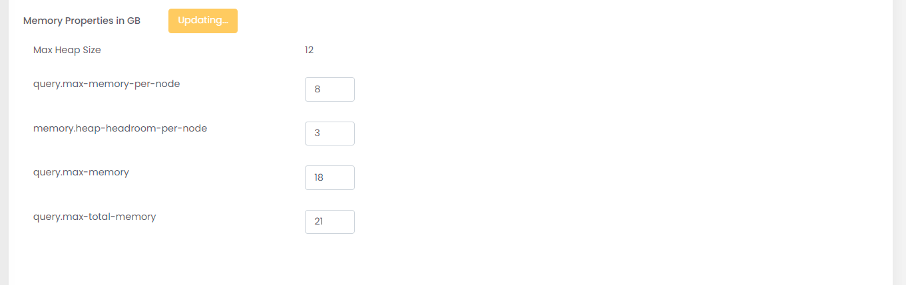
Chango provides updating the following memory properties currently.
query.max-memory-per-nodememory.heap-headroom-per-nodequery.max-memoryquery.max-total-memory
Take a look at the value 12 of Max Heap Size in the above picture.
This Max Heap Size value with which trino pods are running is already determined by chango.
The sum of query.max-memory-per-node and memory.heap-headroom-per-node must be less than Max Heap Size .
Create New Trino Cluster
Let’s create new trino cluster in cluster group of bi for our example. Go to Clusters → Create New Cluster.
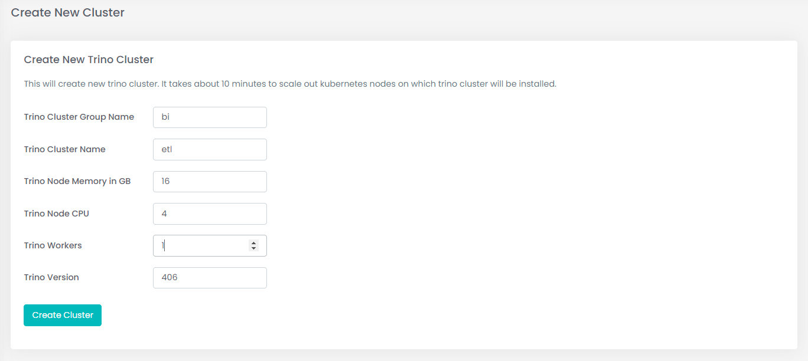
Trino Cluster Name is etl with selecting cluster group of bi . Submit by clicking Create Cluster button.
You can see the progress message in the part of Trino Clusters of page Cluster Group .
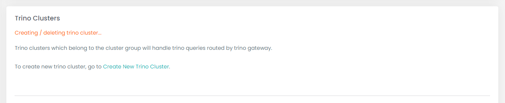
It takes about 15 minutes to create new trino cluster. Chango will provision new kubernetes nodes, 2 new kubernetes nodes in this case, on which new trino cluster will be installed.
The list of trino clusters will be shown after success of creating new cluster. Cluster etl has been created successfully as follows.
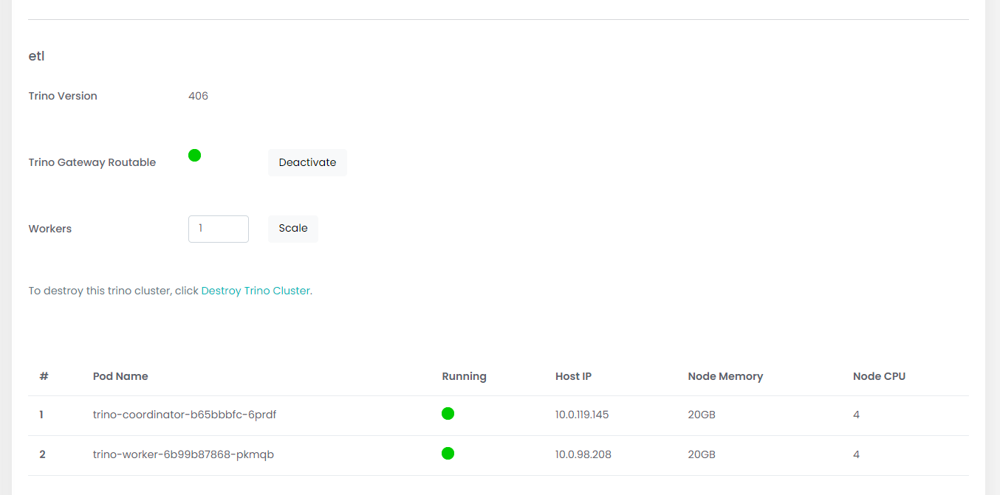
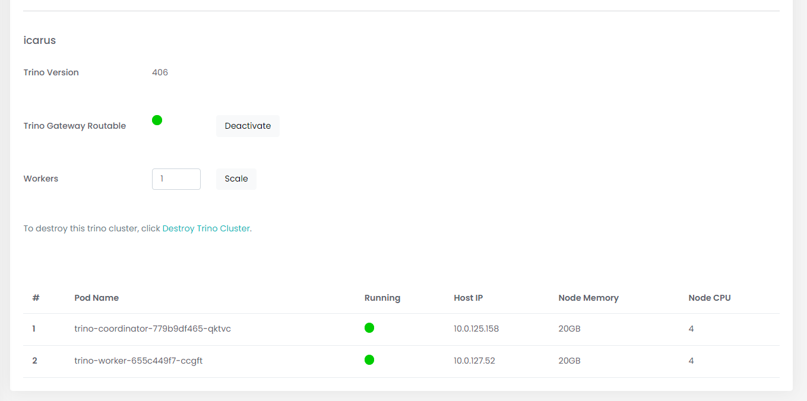
Activate and Deactivate Trino Clusters in Trino Gateway
To deactivate trino cluster, click the buttons of Deactivate in Trino Gateway Routable with green circle,
then trino gateway will not route queries to this trino cluster.
Green circle will be changed to yellow circle in Trino Gateway Routable label.
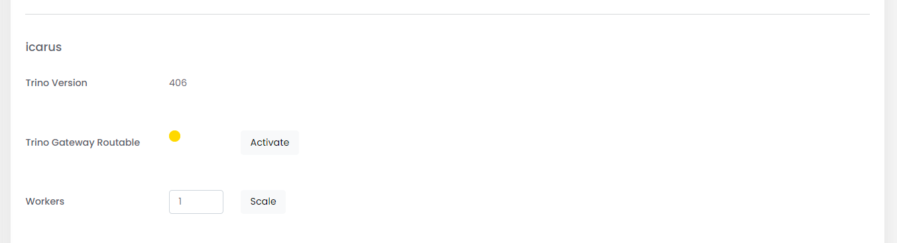
To activate the trino cluster, just click the button of Activate with yellow circle,
then trino gateway will route queries to this trino cluster again.
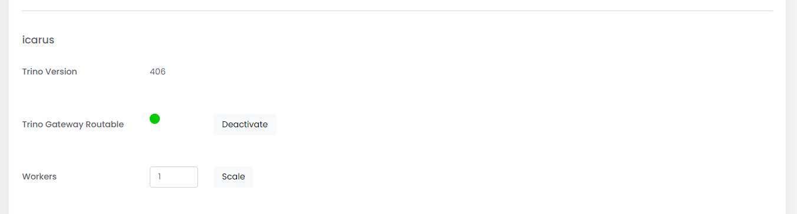
You have 2 trino clusters now to which trino gateway can route the queries.
If you want to scale out workers in one of the clusters, just deactivate that cluster. Now, even if one of the clusters has been deactivated from trino gateway, the other activated trino cluster can handle the queries routed from trino gateway. After scaling out workers of the deactivated cluster, just activate this deactivated cluster again, then all the clusters will execute the queries routed by trino gateway without downtime.
Update User Password of Trino Gateway
After cluster initialized, the default user trino with default password trino123 has been created by chango automatically.
You need to update the password of the user trino.
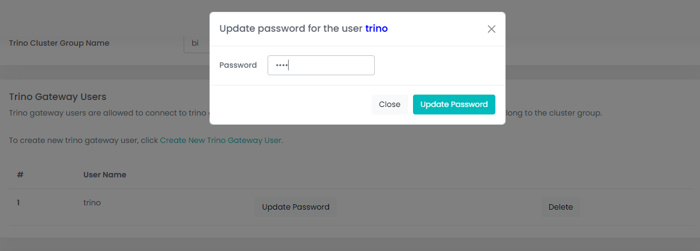
Create New Cluster Group
You can create another cluster groups for the teams like data-scientist . After creating cluster group, new trino gateway users and trino clusters which belong to this cluster group can be created. As mentioned above, all the new created trino gateway users can connect to trino gateway and run queries to trino gateway which will route the queries only to the new created trino clusters.
This separation of cluster group and trino clusters which trino gateway routes the queries only to has an advantage to avoid from conflict problem of monolithic large trino cluster.
Destroy Trino Cluster
You can destroy trino cluster everytime you want with clicking the link of Destroy Trino Cluster . After destroying trino cluster, the destroyed trino cluster will be deactivated and deregistered from trino gateway automatically.
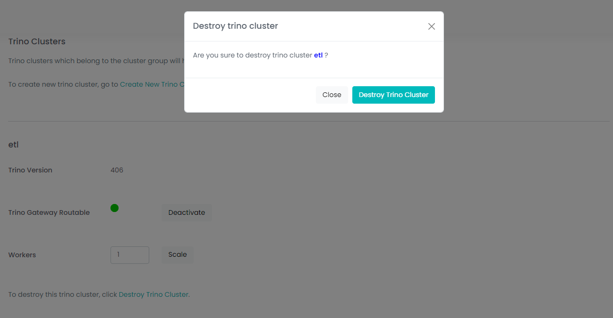
Chango Services
fter success of initializing cluster, there are several chango components installed which can be accessed publicly.
You can see the chango service urls in Services → Services .
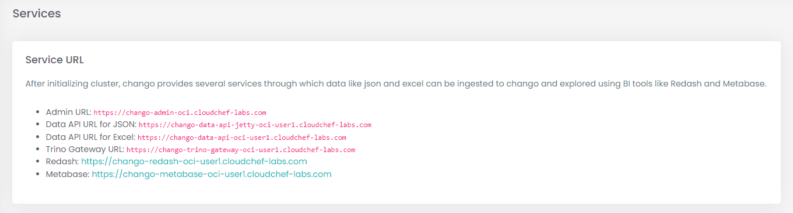
Admin URLis chango admin server to which user needs to be logged in in order to get access token.Data API URL for JSONis chango data api server for json used to ingest json data to chango.Data API URL for Excelis chango data api server for excel used to ingest excel data to chango.Trino Gateway URLis the endpoint of trino gateway to which trino clients like Redash, Trino CLI, Metabase can connect to run queries.Redashis the BI tool, url of Redash installed by chango.Metabaseis the BI tool, url of Metabase installed by chango.
BI Tools
Chango provides popular open source BI tools like Redash and Metabase.
Redash
To connect to trino in Redash, trino data source needs to be added like this. In Host field, the host name of trino gateway url needs to be entered.
Trino Gateway URL convention is.
<user>is the chango user name.
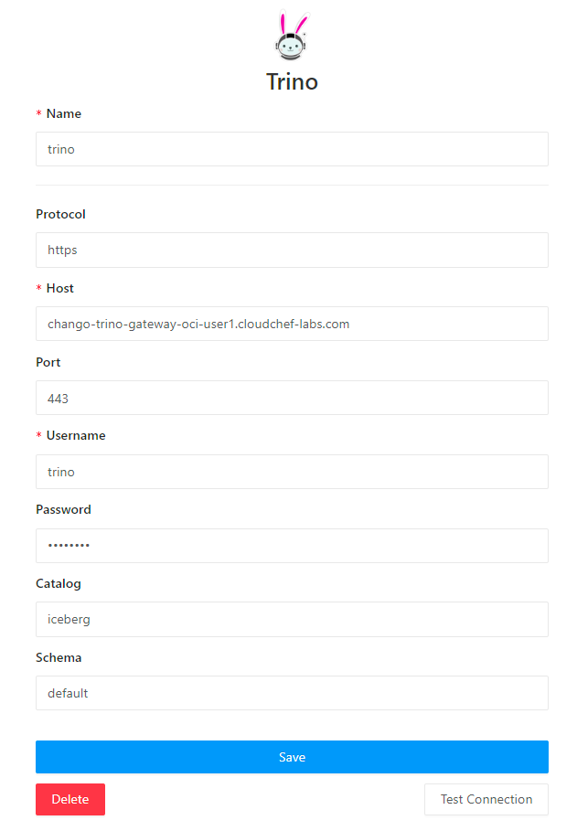
To run queries in Redash, let’s create iceberg schema and table.
-- create schema.
CREATE SCHEMA IF NOT EXISTS iceberg.iceberg_db
-- ctas.
CREATE TABLE IF NOT EXISTS iceberg.iceberg_db.test_ctas
AS
SELECT
*
FROM tpch.sf1000.lineitem limit 100000
With CTAS query, new iceberg table test_ctas has been created, and data from the table tpch.sf1000.lineitem has been inserted
to this iceberg table.
Run select query in iceberg table.
The following picture shows the result of the query run by Redash.
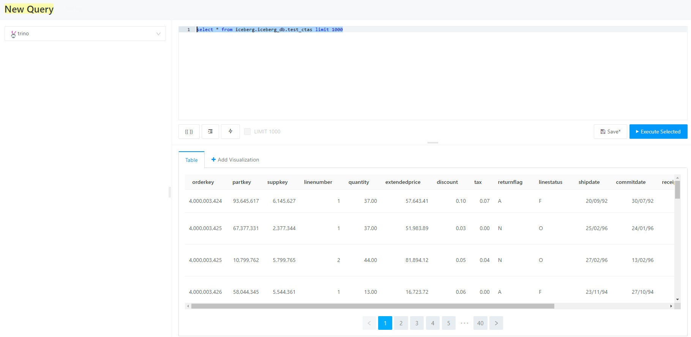
Metabase
As seen in Redash configuration, in Metabase, Starburst database needs to be added to connect to trino gateway.
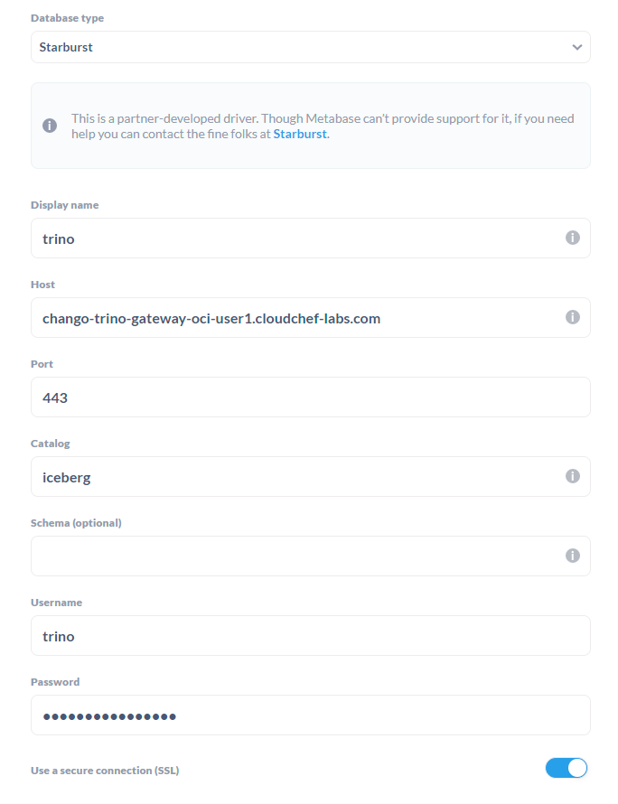
Let’s run the query in iceberg table. The following picture shows the result of the query run by Metabase.
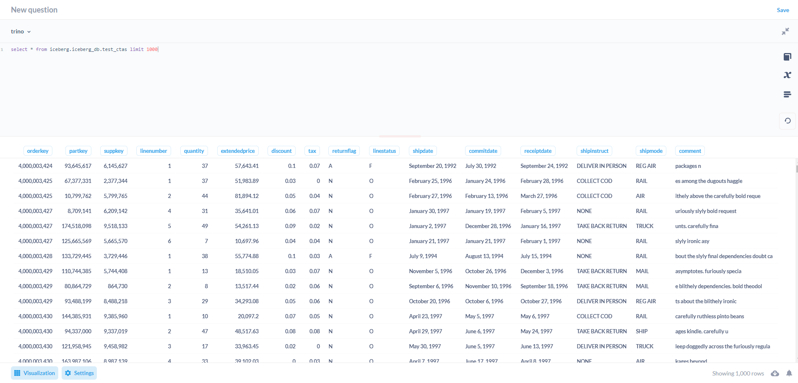
Trino Catalogs
There are many connectors supported by trino to access external data sources. By adding trino catalogs, external data sources can be accessed by trino, and external data can be ingested to chango.
Create / Update / Delete Catalogs
Go to Clusers → Trino Catalogs to create, update and trino catalogs in trino cluster.
The following shows the reserved names of catalogs already created by chango.
You need to use the other names of catalogs instead of the reserved catalog names when creating catalogs.
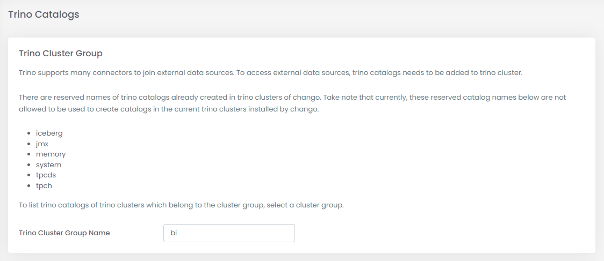
Let’s create new trino catalog with the name of mysql .
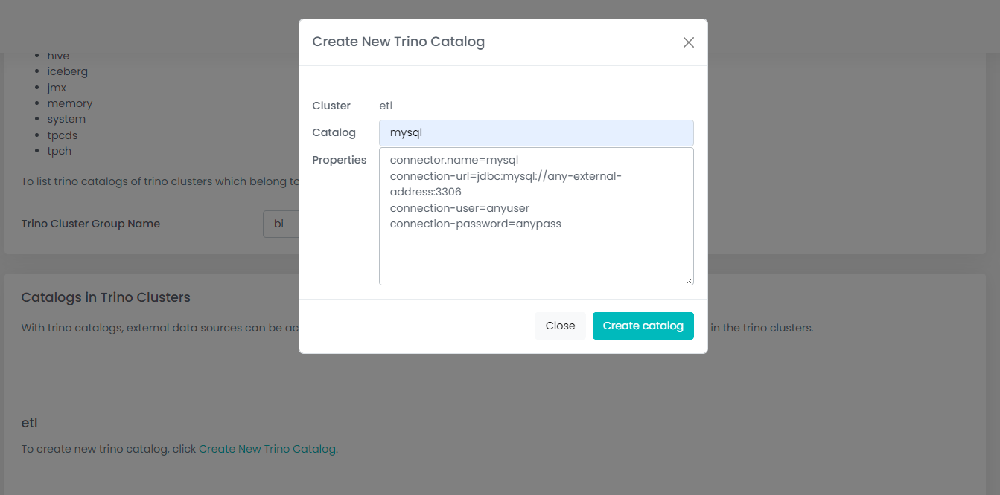
After clicking the button of Create Catalog, the following message will be shown.
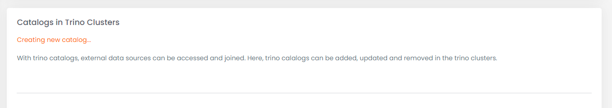
After success of creating catalog mysql , the catalog mysql will be listed with properties value.
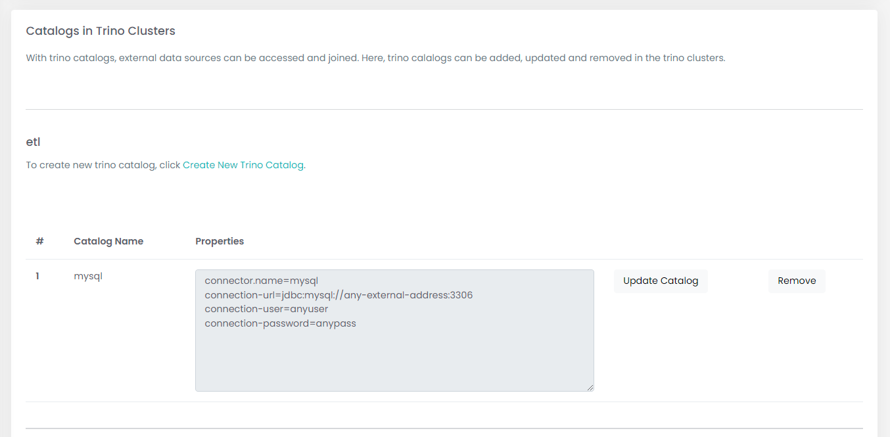
You can update the catalog by clicking the button of Upate Catalog .
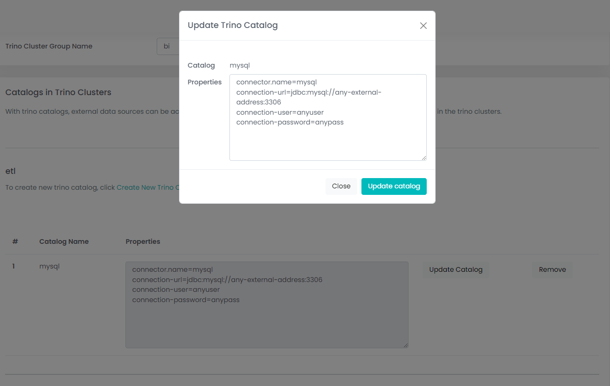
Take a note that we have 2 trino clusters to which trino gateway will route the queries.
In order to use mysql catalog, you need to create the same catalog in the other trino cluster. Let’s create catalog mysql in the other cluster.
After creating catalog mysql for the other cluster, you will see the catalog list in trino clusters section.
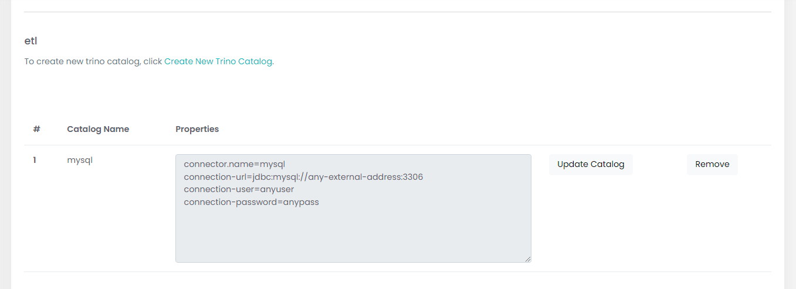
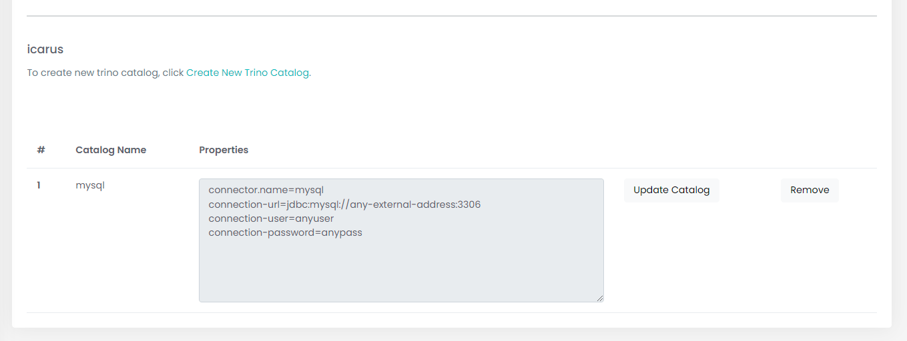
Now, you are ready to use mysql catalog through trino gateway. If you have plan to remove or update catalogs from trino clusters, use the functionality of activation / deactivation of trino clusters in trino gateway to avoid from query execution failure in trino clusters.
To remove catalogs in trino cluster, just click the button of Remove .
Open Table Format Catalog
There are open table formats supported by trino, namely, Iceberg, Delta Lake and Hudi.
Because Iceberg catalog iceberg has already been created by chango when creating trino cluster,
you don’t have to create iceberg catalog in chango. But if you have external hive metastore from which all table metadata for external iceberg tables needs to be retrieved,
then another iceberg catalog which connects to this external hive metastore can be added to chango.
In this case, you have to choose another name for your iceberg catalog which is not the same to iceberg
because iceberg catalog name already exists in trino clusters in chango.
Because iceberg table format is most popular table format, the default table format in chango is iceberg,
and if you want to insert data to chango, all your data will be saved as iceberg table in chango.
Scale Data Ingestion
Ingestion group is a set of data ingestion components like chango data api, kafka cluster and spark streaming job provided by chango to collect incoming external data like csv, json and excel and save them to chango. As your incoming data volume is increased, you may consider scaling out ingestion groups to handle more incoming data.
To scale data ingestion, go to Data Ingestion → Scale Ingestion Group in the menu.
Create Ingestion Groups
For example, creating 2 ingestion groups with 3 node count for each ingestion group means, each ingestion group will be deployed on 3 new created nodes because of 3 node count, so 2 ingestion groups will be deployed on 6 new created nodes.
To create ingestion groups, click Create Ingestion Groups.
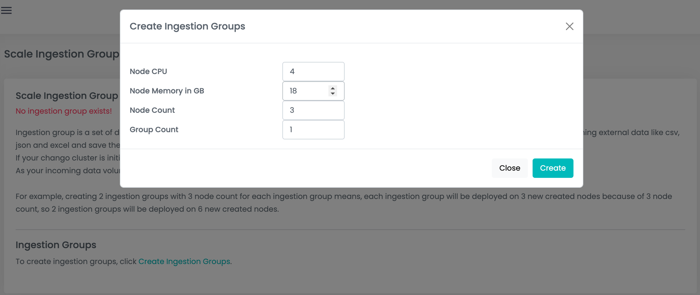
As seen in the above picture, 3 nodes with the capacity of 4 CPU and 18GB memory for every ingestion group will be created. The data ingestion components like chango data api, kafka, spark streaming job, etc for an ingestion group will be deployed on that 3 new created nodes. Because Group Count is 1, just one ingestion group will be installed. If Group Count were 2, then two set of data ingestion components would be deployed on 6 new created nodes.
After creating ingestion groups finished, you will see the ingestion groups installed.
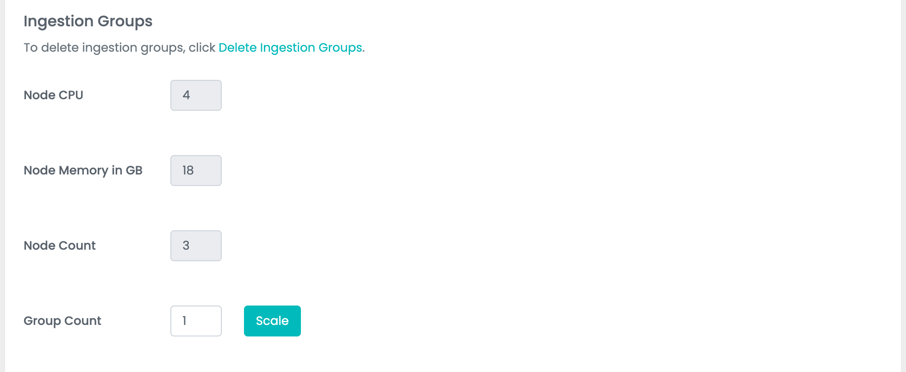
The details about installed data ingestion components like chango data api, nginx, kafka cluster and spark streaming job for every ingestion group also will be listed.
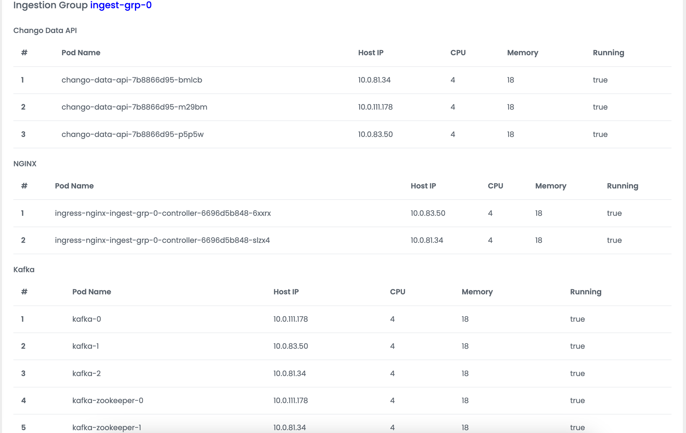
Scale Ingestion Groups
If you want to increase or decrease ingestion groups, then adjust the value of Group Count and click the button of Scale.
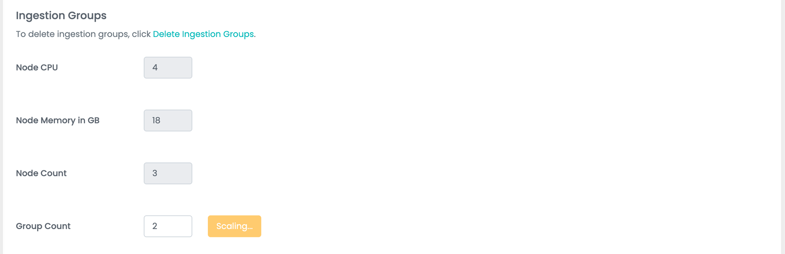
Delete Ingestion Groups
You can also delete ingestion groups created. Click Delete Ingestion Groups.
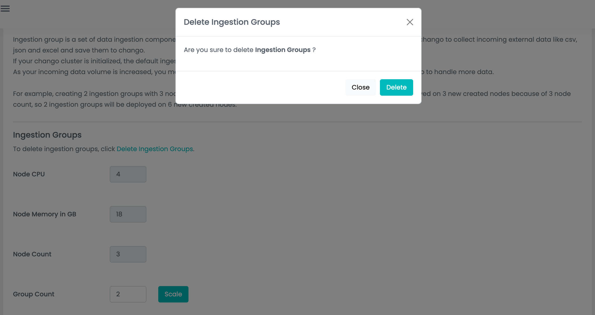
Even if you have deleted ingestion groups, the default ingestion group will remain to keep handling incoming data.
Data Ingestion in Chango
There are three ways to insert external data to chango.
- Insert local csv, json and excel data and csv, json data located on S3 to chango using chango client.
- Insert streaming json data to chango using chango client library.
- Insert external data sources to chango using trino catalogs.
Insert Local and S3 Data to Chango using Chango Client
Chango provides chango client to insert local csv, json and excel data to chango. These data will be saved as iceberg table in chango and can be explored by trino clients like Redash and Metabase provided by chango.
The chango client is a CLI written in Java. So Java 11 needs to be installed beforehand to use it.
Upload Excel to Chango
Instead of using Chango CLI to insert excel data to chango, you can also use Upload Excel page in Data Ingestion menu like below picture.
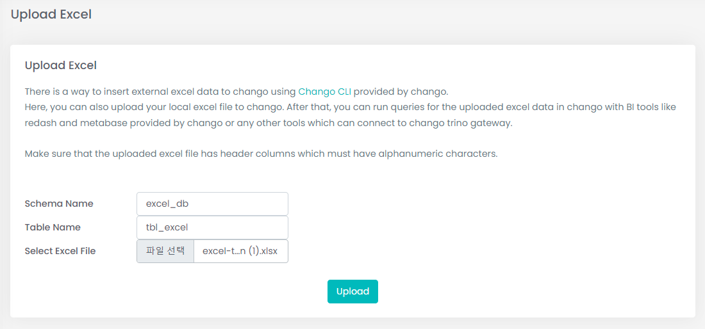
After uploading excel file, you can run queries for uploaded excel data in chango using BI tools like redash and metabase provided by chango or any other tools which can connect to chango trino gateway. For example, run the following query to explore above uploaded excel data.
Insert Streaming Data to Chango using Chango Client Library
External applications like streaming applications can send streaming json data to chango using chango client library written in java.
External applications just need to call add(json) method of ChangoClient instance, then ChangoClient instance will queue
the incoming json list internally and send these queued json list to chango in batch mode,
for instance, send 100 json rows in gzip format to chango at once.
Insert External Data Source to Chango using Trino Catalogs
Trino supports many connectors to join external data sources.
To do so, trino catalogs needs to be added to trino. After adding trino catalogs for external data sources,
you can query external data sources. To ingest external data sources to chango,
you can use the queries like CTAS or INSERT INTO [TABLE] SELECT . There are many resources how to use trino queries out there.
Monitoring
Monitor Cluster
You can monitor all the chango components resources with grafana provided by chango. Go to Monitoring → Monitor Cluster .
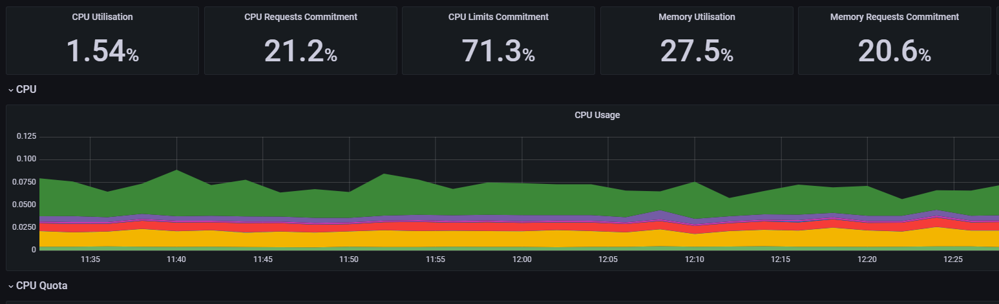
Billing
Usage Cost
To see the chango usage cost, go to Billing → Usage Cost .
Here, you can see the chango usage cost for now. To see the previous usage history, click the input box to select desired month.
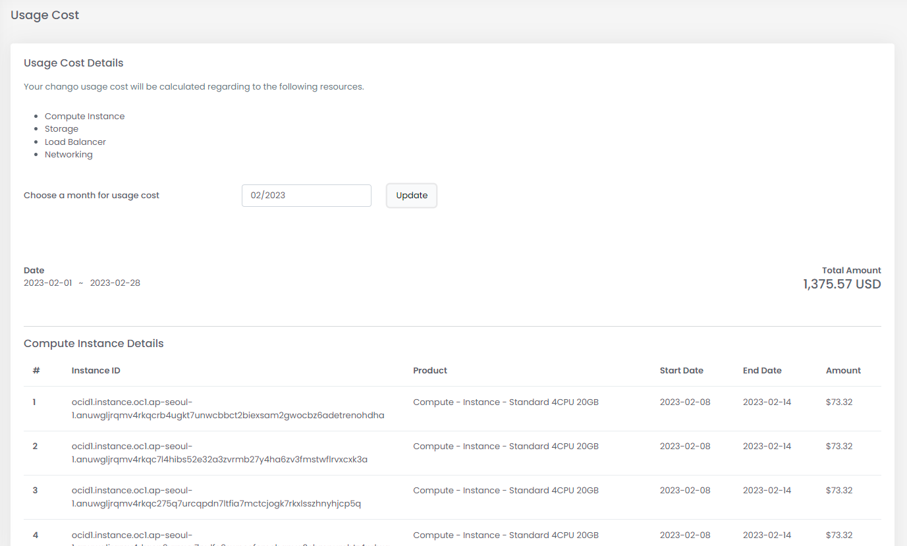
You can estimate monthly settlement easily.
Settings
Delete Chango Cluster
If you want to delete your chango cluster, go to Setting → Delete Chango Cluster .
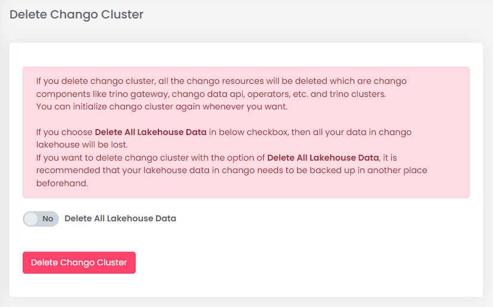
Take a note that all the chango resources like trino clusters, trino gateway, operators and chango data api, etc will be deleted.
You can initialize chango cluster again whenever you want later. If you want to do so, go to Clusters → Create Initial Cluster .
The default option of Delete All Lakehouse Data is No, which means, even if you delete the chango cluster,
your lakehouse data in chango will not be deleted. Next time you initialize chango cluster again,
you can explore your lakehouse data in chango again.
But meta data of trino gateway users and trino cluster groups will be lost because such meta data depends
on the current trino clusters in chango cluster.
If you have checked the option of Delete All Lakehouse Data as Yes in the checkbox,
all your lakehouse data in chango will be lost.
It is recommended that your lakehouse data in chango needs to be backed up in another place beforehand.